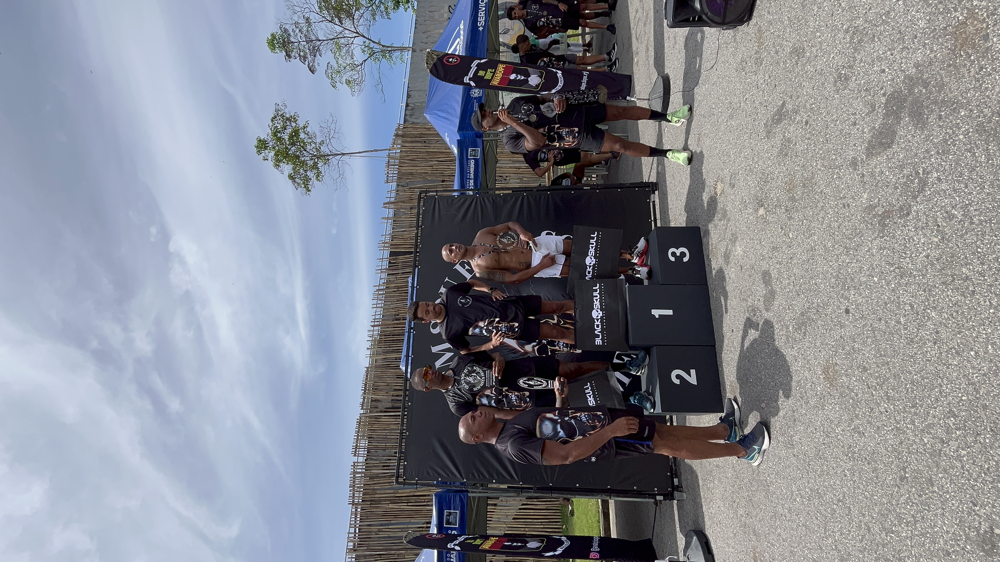
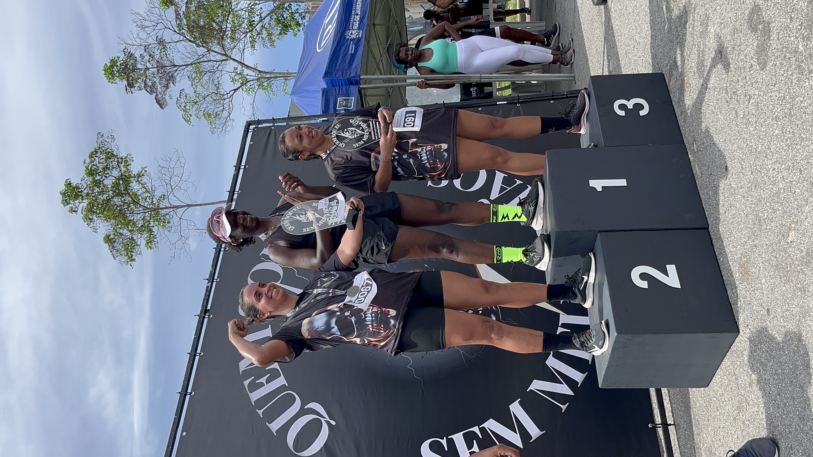
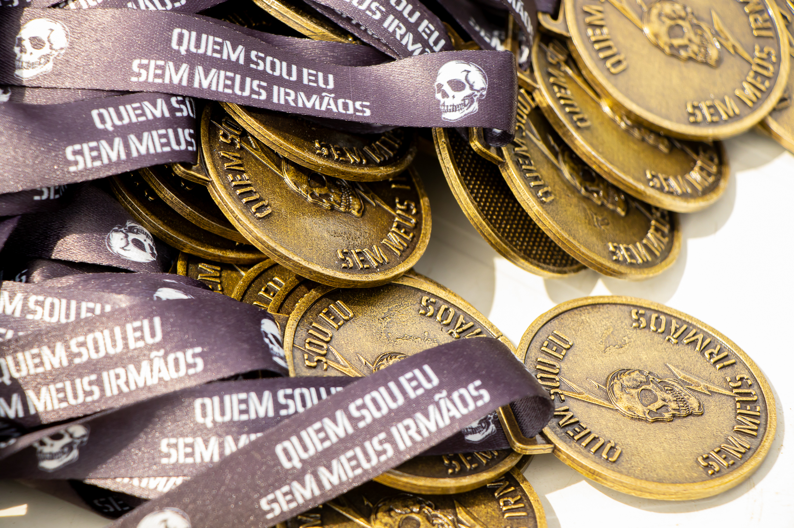
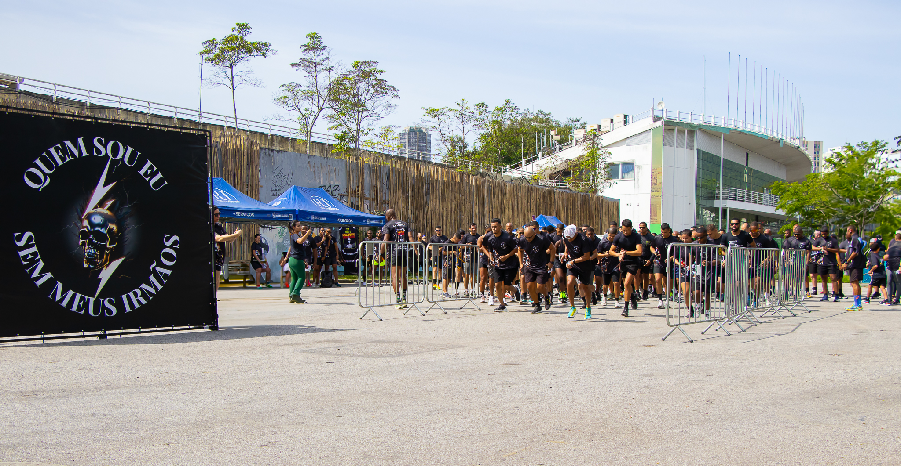
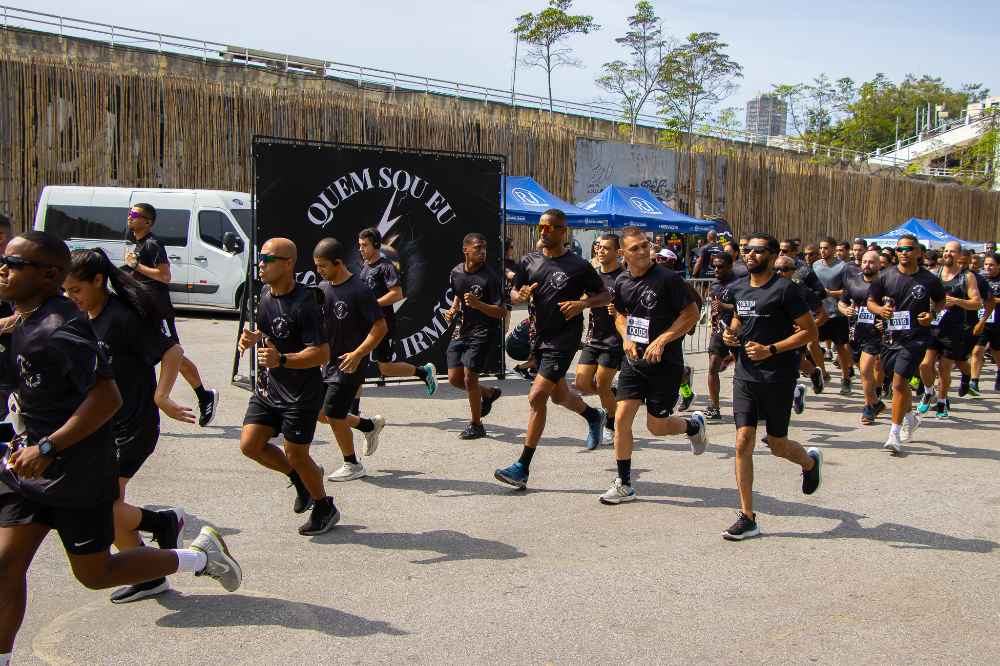
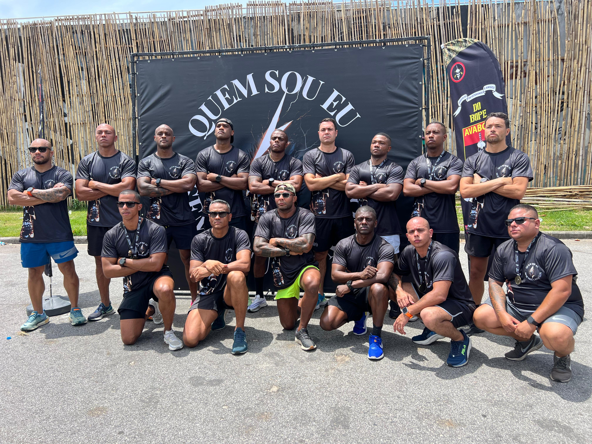

O projeto Quem Sou Eu Sem Meus Irmãos nasceu da união de policiais do BOPE do Rio de Janeiro com o objetivo de fortalecer laços, promover solidariedade e dar suporte a companheiros de farda em situações de vulnerabilidade.
Realizamos eventos como corridas de rua, mentorias, cursos, encontros e ações sociais. Parte da arrecadação é destinada a ajudar Policiais, Esposas de Policiais, Órfãos, cadeirantes, feridos em serviço, com necessidades especiais ou em situação de risco.

Nosso parabéns aos atletas masculinos que se destacaram na 2ª Edição! Vocês demonstraram que a força vai além dos músculos - está no coração de quem serve com honra. Cada conquista de vocês inspira outros irmãos a nunca desistir.

Nossas felicitações às atletas femininas que brilharam na 2ª Edição! Vocês provaram que coragem e determinação não têm gênero. Suas vitórias ecoam como símbolo de força para todas as mulheres da nossa cidade.

Mais que simples metais, nossas medalhas representam conquistas que transcendem o pódio. Cada medalha carrega a história de superação, dedicação e coragem de verdadeiros campeões da vida. São símbolos tangíveis do esforço, da persistência e do espírito indomável de quem nunca desiste.
Criadas com carinho e significado especial, essas medalhas celebram não apenas vitórias esportivas, mas principalmente as conquistas pessoais de cada participante. Porque para nós, todo participante que cruza a linha de chegada já é um vencedor, independente da colocação.

Cada passada é um ato de resistência, cada quilômetro percorrido é uma demonstração de força e união. Nossas corridas temáticas transformam o asfalto em palco de solidariedade, onde guerreiros de farda correm não apenas por medalhas, mas por uma causa maior: apoiar quem dedica a vida a proteger outros.

Cada passada é um ato de resistência, cada quilômetro percorrido é uma demonstração de força e união. Nossas corridas temáticas transformam o asfalto em palco de solidariedade, onde guerreiros de farda correm não apenas por medalhas, mas por uma causa maior: apoiar quem dedica a vida a proteger outros.

Mais que colegas, somos família. Unidos pelo juramento sagrado de proteger e servir, fortalecidos pela confiança mútua construída em cada operação, cada momento de perigo compartilhado. Na trincheira das ruas ou nos desafios da vida pessoal, jamais deixamos um irmão para trás.
Nossa força vem da certeza de que, lado a lado, somos invencíveis. Quando um cai, todos se levantam para erguê-lo. Quando um celebra, todos compartilham a vitória. Esta é a essência do BOPE: homens e mulheres que transcenderam a profissão para se tornarem uma verdadeira família de guerreiros, onde o código de honra é mais forte que qualquer adversidade.
Participe dos nossos eventos ou adquira nossos produtos solidários